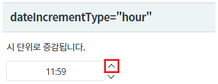
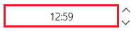
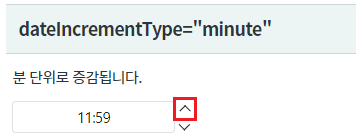
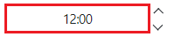
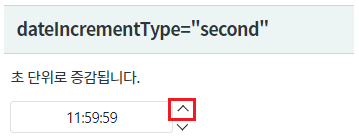
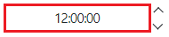
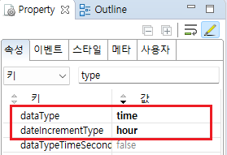
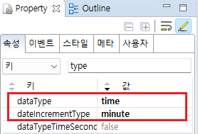
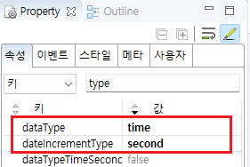
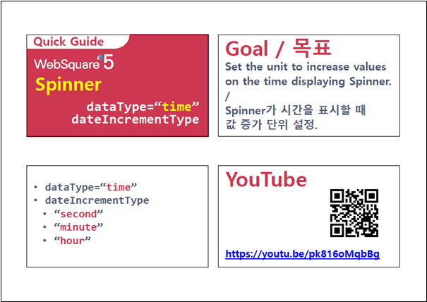

컴포넌트의 속성 dataType이 "time"으로 지정되었을 때, 속성 dateIncrementType의 설정 값에 따른 기능 비교 예제입니다. 속성 dateIncrementType는 날짜의 증감 단위를 지정할 수 있으며, 지정할 수 있는 유형은 아래와 같습니다.
dateIncrementType="hour" : 시 단위 증감
dateIncrementType="minute" : 분 단위 증감
dateIncrementType="second" : 초 단위 증감
속성 dateIncrementType은 속성 dataType의 설정값이 "time" 또는 "date"로 지정된 경우만 동작합니다.
증감 기능은 컴포넌트에 포함된 버튼을 클릭하거나 입력 영역(Input)에서 키보드의 방향키 "UP", "DOWN"을 눌러 사용할 수 있습니다.
시 단위 증감 설정
분 단위 증감 설정
초 단위 증감 설정
컴포넌트 우측에 구성된 버튼을 클릭하여 데이터의 증감을 확인합니다.
영역 [dateIncrementType="hour"]의 Spinner의 증가 버튼을 클릭합니다.
[브라우저(Chrome) 실행 예시]

값이 시 단위 1 증가합니다.
[브라우저(Chrome) 실행 예시]

영역 [dateIncrementType="minute"]의 Spinner의 증가 버튼을 클릭합니다.
[브라우저(Chrome) 실행 예시]

값이 분 단위 1 증가합니다.
[브라우저(Chrome) 실행 예시]

영역 [dateIncrementType="second"]의 Spinner의 증가 버튼을 클릭합니다.
[브라우저(Chrome) 실행 예시]

값이 초 단위 1 증가합니다.
[브라우저(Chrome) 실행 예시]

STEP1. 속성을 지정합니다.
[필수] dataType="time" //데이터 타입을 시간형으로 지정합니다.
[필수] dateIncrementType="hour" //증감 단위를 시 단위로 지정합니다.
[default:day, year, month, hour, minute, second] dataType이 date 또는 time인 경우에 버튼을 클릭하여 증가시킬 값.
dataType이 date인 경우 day, year, month, hour, minute만 설정 가능
dataType이 time인 경우는 hour와 minute, second만 설정 가능
그림 1.웹스퀘어5 SP5 스튜디오의 Property View(속성창) 예시

[소스 코드 예시]
<!-- spinner의 소스 본문 예시 --> <w2:spinner dataType="time" dateIncrementType="hour" id="spi_exam1"> </w2:spinner>
원하는 시점에 컴포넌트의 초기값을 지정하는 스크립트를 작성합니다.
//예제 파일의 스크립트 "scwin.initPage"에 작성되었습니다. //Spinner [spi_exam1]에 값을 "11시 59분"으로 할당합니다. spi_exam1.setValue("1159");
STEP1. 속성을 지정합니다.
[필수] dataType="time" //데이터 타입을 시간형으로 지정합니다.
[필수] dateIncrementType="minute" //증감 단위를 분 단위로 지정합니다.
[default:day, year, month, hour, minute, second] dataType이 date 또는 time인 경우에 버튼을 클릭하여 증가시킬 값.
dataType이 date인 경우 day, year, month, hour, minute만 설정 가능
dataType이 time인 경우는 hour와 minute, second만 설정 가능
그림 2.웹스퀘어5 SP5 스튜디오의 Property View(속성창) 예시

[소스 코드 예시]
<!-- spinner의 소스 본문 예시 --> <w2:spinner dataType="time" dateIncrementType="minute" id="spi_exam2"> </w2:spinner>
원하는 시점에 컴포넌트의 초기값을 지정하는 스크립트를 작성합니다.
//예제 파일의 스크립트 "scwin.initPage"에 작성되었습니다. //Spinner [spi_exam2]에 값을 "11시 59분"으로 할당합니다. spi_exam2.setValue("1159");
STEP1. 속성을 지정합니다.
[필수] dataType="time" //데이터 타입을 시간형으로 지정합니다.
[필수] dateIncrementType="second" //증감 단위를 초 단위로 지정합니다.
[default:day, year, month, hour, minute, second] dataType이 date 또는 time인 경우에 버튼을 클릭하여 증가시킬 값.
dataType이 date인 경우 day, year, month, hour, minute만 설정 가능
dataType이 time인 경우는 hour와 minute, second만 설정 가능
그림 3.웹스퀘어5 SP5 스튜디오의 Property View(속성창) 예시

[소스 코드 예시]
<!-- spinner의 소스 본문 예시 --> <w2:spinner dataType="time" dateIncrementType="second" id="spi_exam3"> </w2:spinner>
원하는 시점에 컴포넌트의 초기값을 지정하는 스크립트를 작성합니다.
//예제 파일의 스크립트 "scwin.initPage"에 작성되었습니다. //Spinner [spi_exam3]에 값을 "11시 59분 59초"로 할당합니다. spi_exam3.setValue("115959");
dataType
dateIncrementType
dataTypeTimeSecond
[웹스퀘어5 SP5 개발 가이드] Spinner
링크 : https://docs1.inswave.com/sp5_user_guide/8df43d1f59fab704#42ddf8532ad343b6
[웹스퀘어5 SP5 개발 가이드] Spinner 시간 증가 단위 설정
링크 : https://docs1.inswave.com/sp5_user_guide/8df43d1f59fab704#e9e67ba58ebb3553
Spinner 시간 증가 단위
링크 : https://youtu.be/pk816oMqbBg
